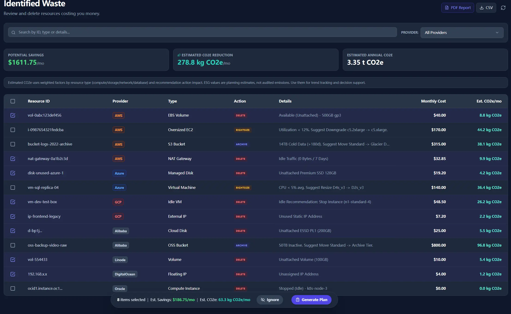

When teams cannot explain bill deltas, they lose time in argument before they can act. The review only works when finance, ops, and engineering can read the same finding and agree on the next step.
Cloud Waste Scanner exists to make those decisions executable: explain the finding, map ownership, and keep the evidence trail clear enough for weekly review.
Peter Drucker wrote, "The purpose of business is to create and keep a customer." We treat that as an engineering requirement, not a slogan. Creating customers does not mean closing a transaction once. It means delivering repeatable value in high-stakes, real-world workflows where reliability and clarity matter every day.

From feature output to execution certainty
In practice, product quality is not measured by how many buttons exist. It is measured by whether teams can finish critical actions without ambiguity. Can they identify why a scan failed? Can they isolate notification failures quickly? Can managers trust that a reported trend is measured with a clear denominator? Can finance and engineering read the same result and agree on next steps?
This is why the product stays local-first. Credentials stay local. Signal quality comes before visual noise. Recommendations should move directly into action: discover waste, explain context, prioritize change, execute safely, and verify outcomes.
The compounding value is in reduced friction at each step. Faster diagnosis. Fewer false paths. Cleaner handoffs between engineering, operations, and finance. Better confidence in what to do next.
Craftsmanship means being accountable for edge cases
We invest deeply in details that can look small from the outside but are critical in production: error messages that are specific enough to reproduce, logs that are traceable under pressure, naming and field semantics that remain consistent across UI and APIs, and failure states that do not leak confusion into the next workflow step.
This is what technical craftsmanship means to us. Not ornamental complexity, but operational accountability.
Steve Jobs said, "You've got to start with the customer experience and work backward to the technology." Jeff Bezos added a similar discipline: "Start with the customer and work backwards." These are not abstract quotes to us. They are release criteria.

Customer feedback is our primary product input
We treat customer feedback as core engineering input, not an after-sales attachment. The most useful feedback is often precise, sometimes uncomfortable, and always grounded in real constraints: corporate proxies, strict credential policies, noisy networks, compliance obligations, and mixed technical maturity across teams.
Our job is to convert that feedback into product behavior that makes difficult environments manageable. We start with root cause, then improve communication around it, then verify with QA in realistic scenarios. The objective is simple: less uncertainty per decision.
Sam Walton's line still applies: "There is only one boss. The customer." In engineering terms, that means real user workflows decide what is priority.
From FinOps to ESG: cost savings plus carbon reduction
The next step is to make the output broader than "money saved." Teams should also see "carbon reduced" in practical terms, tied to the same findings and closure trail.
When a team decommissions idle compute, rightsizes over-provisioned resources, or removes unnecessary storage retention, there is a financial result and an environmental result. We are building reporting that represents both, with consistent calculation rationale and auditable assumptions.
The goal is not a marketing badge. The goal is aligned decision language across engineering, finance, and leadership: one recommendation, two measurable outcomes, one accountable execution path.

What this means for teams adopting Cloud Waste Scanner
- You get clearer diagnosis paths when scans or integrations fail.
- You get practical recommendations that map directly to operations work.
- You keep credentials local while still gaining cross-account visibility.
- You can frame optimization outcomes as both cost impact and ESG impact.
- You gain a product team that ships based on real user feedback loops.
Our long-term commitment
We will continue to build along three non-negotiable lines: security, reliability, and execution clarity. Cloud Waste Scanner should do more than find issues. It should help teams finish the right actions and prove the results.
If your team is balancing cloud cost, compliance pressure, and delivery speed, we welcome direct feedback from your real operating context. Concrete feedback helps us improve the product for the next team that tries it.
Technology creates social value when it turns complexity into confidence. That is the standard we will keep shipping against.
For implementation detail, continue with Industry Solutions Whitepaper Part 1. If you need a budget and rollout checkpoint before adoption, review Pricing and rollout options.